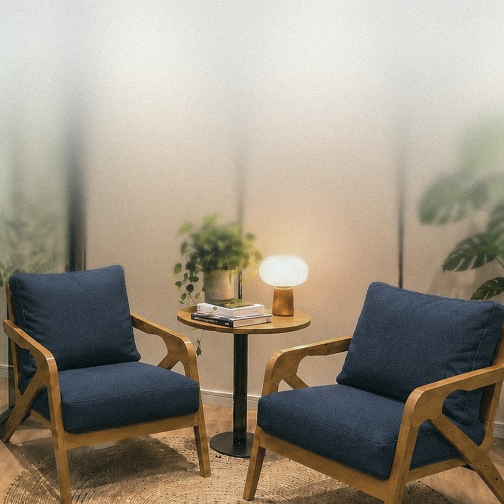

fairhealth · Escritório do Cuidado
O colaborador
no centro.
O Escritório do Cuidado é um espaço de atendimentomédico e psicológico dentro da empresa. Tira docaminho a maior barreira ao cuidado: o tempo e o acesso.